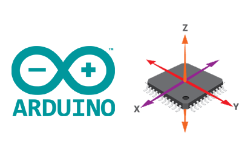
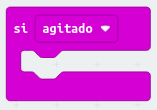
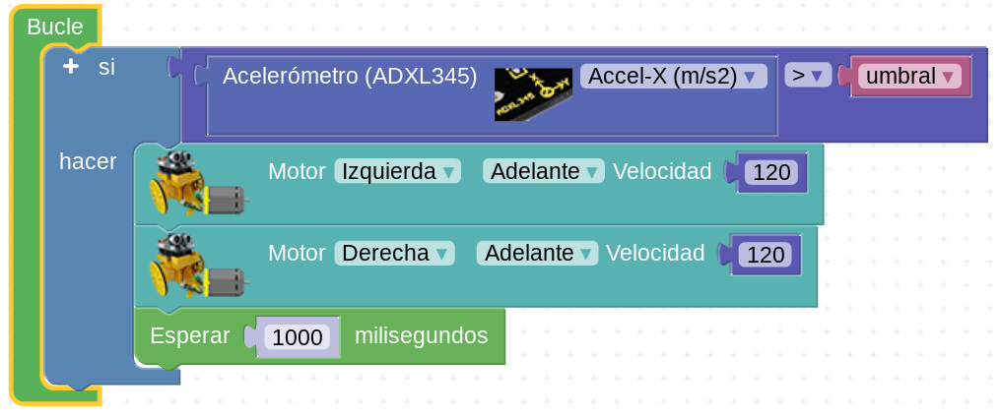

Ayuda a Mara en su aventura marciana
Extra task. ¡Despierta, Mara!
Caso práctico
A Mara le gusta pasear de noche... Eso ya lo sabemos.
Porque Mara no duerme, recarga baterías. Y solo necesita un par de horas para hacerlo.
El resto de la noche se le hace muy laaaaaaaarga.
Y como además es una soñadora, el espectáculo de la noche marciana plagada de estrellas es superior a sus fuerzas. Así que la tenemos otra vez vagabundeando por la superficie marciana.
Pero esta vez Mara se ha confundido. Por lo que sea, porque se ha desconectado antes de tiempo o porque no se enchufó bien, lo cierto es que ha salido a pasear con las baterías casi descargadas... Y no es consciente de ello.
Así que, mientras observa el espectáculo de las Pléyades en el cielo marciano, sus circuitos empiezan a pitar...
|
|
|
| Para saber más...: Pléyades en la Wikipedia | |
- ¿Qué es ésto? ¡Oh, por todos mis circuitos! ¡Estoy a menos del diez por ciento de carga!
Y cuando ésto ocurre, Mara entra en modo stand-by. Se le paran casi todos los circuitos, entrando en una especie de colapso. Lo único que le funciona es el envío de una señal de emergencia a las radio balizas que avisan a Nico y Mili de que tiene problemas.
= = = = = = = = =
Ambos no tardan en llegar. Y empiezan a agitar a Mara mientras le enchufan una batería portátil.
- ¡Vamos Mara! ¡despierta! - le grita Mili mientras la agita -.
- ¡Esta Mara es incorregible! - dice Nico -.
Proceso para llevar a cabo la tarea
El acelerómetro
¿Qué es un acelerómetro?
Un acelerómetro es un dispositivo capaz de medir si estamos ejerciendo una fuerza sobre él, normalmente desplazándolo.
Luis Llamas - Cómo usar un acelerómetro en nuestros proyectos de Arduino
Acelerómetro en el robot Maqueen
El robot modelo Maqueen micro:bit lleva incorporado un acelerómetro en la placa. Podemos usarlo para completar esta tarea.
Para saber más
- Más de acelerómetro con microbit y Maqueen: https://microbit.org/es-es/projects/make-it-code-it/animal-tracker/
- Web de Luis Llamas: https://www.luisllamas.es/como-usar-un-acelerometro-arduino/
- Web de Luis Llamas, el dispositivo de medición inercial MPU6050: https://www.luisllamas.es/arduino-orientacion-imu-mpu-6050/
- Web de Luis Llamas, el acelerómetro adxl345: https://www.luisllamas.es/arduino-acelerometro-adxl345/
- El acelerómetro adxl335: https://descubrearduino.com/tutorial-arduino-conexion-muestra-serial-acelerometro-adxl345/
Razona el algoritmo
Diagrama de flujo
Para llegar a hacer este programa necesitas razonar el algoritmo. ¿Qué tal si diseñas un diagrama de flujo? Ten en cuenta, además, que existen unos bloques básicos que tendrás que usar o bien en el lenguaje makecode (para Maqueen micro:bit) o para un robot basado en arduino y un acelerómetro genérico.
Bloque makecode (micro:bit)

- Con este bloque conseguimos ejecutar unas órdenes si se agita. En el ejemplo, moverse durante un segundo hacia adelante.
- Comprueba la variación si en vez de agitarse (desplegable en la flecha) lo inclinamos o aplicamos un "golpe" 3g
Bloques en Arduinoblocks

- ¡OJO! Este código está sin comprobar.
- Si tenemos un acelerómetro ADXL345 podemos comprobar si su valor supera cierto umbral, para mover los motores.
Cómo trabajar
- Normalmente se trabaja en parejas o en pequeños grupos, con un robot y un ordenador para programarlo.
- Aunque tu compañero/a sea quien maneje el ordenador o el robot, intenta siempre entender lo que estáis programando o haciendo: las órdenes o bloques que se están usando, el tiempo que tardan en ejecutarse, el orden en el que se colocan los bloques en el programa...
- Compartir las ideas con los demás, colaborar en lograr el reto, no molestar a otros grupos si están probando o trabajando...
- Si no sale a la primera, no desanimarse. Es normal que haya que hacer varias pruebas hasta que salga.
Pistas
La clave para el éxito está en:
- Pensar siempre, a priori, qué estamos haciendo.
- Averiguar los bloques de programación necesarios.
- Deducir el diagrama de flujo ANTES de escribir el programa.
- ¿Qué bloque de detección de movimiento usarás? Si tiene variaciones, puedes ir probando para ver con cuál funciona mejor.
- Haz las cosas paso a paso: no pasar al paso siguiente hasta no tener seguro el anterior.
Obra publicada con Licencia Creative Commons Reconocimiento No comercial Compartir igual 4.0